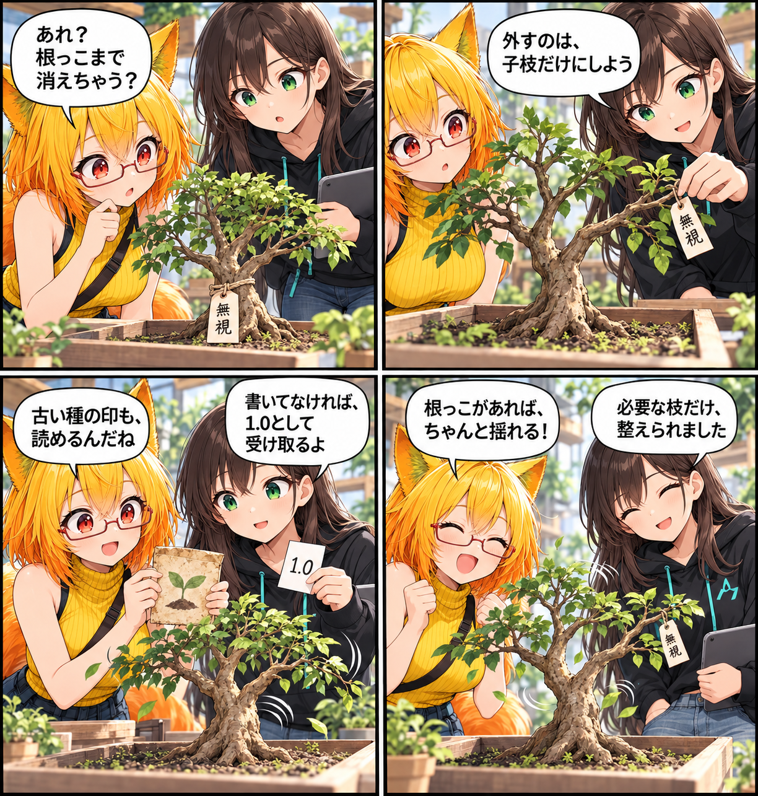

根っこを残して、揺れを読む日
UnityPackageから取り込むPhysBoneで、Ignore指定がルートまで外さないようにし、旧形式の読み込み互換性も整えました。

Ignoreは子枝だけに効かせる
VRChat側の挙動では、PhysBoneのルートは常に読み込みの起点になります。一方、Ignore Transformsはそこから先の子枝を対象にします。これまでルート自身がIgnore一覧にあるデータでは、読み込み開始前にルートまで外れてしまう余地がありました。今回、ルートは残し、子階層だけを除外する扱いに合わせました。
古いPhysBoneも、記録どおりに判定する
旧いPhysBone 1.0形式では、versionが保存されていないPrefabがあります。versionがない場合は1.0として扱い、明示されている値は従来どおり読み取ります。既存の記録を推測で新しい形式へ寄せず、保存された内容に沿って取り込むための調整です。
重複した確認を減らす
PhysBoneの読み込み時に繰り返していた重複検証も削減しました。読み込みの正しさを保ちつつ、同じ確認を何度も行わない構造へ整理しています。
ほかにも進んだこと
同じ集計期間には、アバター読み込み中でもUI操作を続けられるようにする調整や、PhysBoneのランタイム処理とテストの整備も進みました。今回は、UnityPackage由来のデータを正しくたどる入口を主題にしています。
4コマの裏話
枝に付けた「ここから先は入れない」の札を、根っこそのものに付けたらどうなるか、という小さな勘違いから始めました。根が残れば、必要な揺れをたどれます。
まとめ
UnityPackage由来のPhysBoneでIgnore指定がルートまで消してしまわないようにし、古いversion未記録のPrefabも1.0として読み取れるようにしました。互換性を保ちながら、必要な骨のつながりを残す改善です。
本日のひとこと
枝を整える前に、根っこは残しておこう。